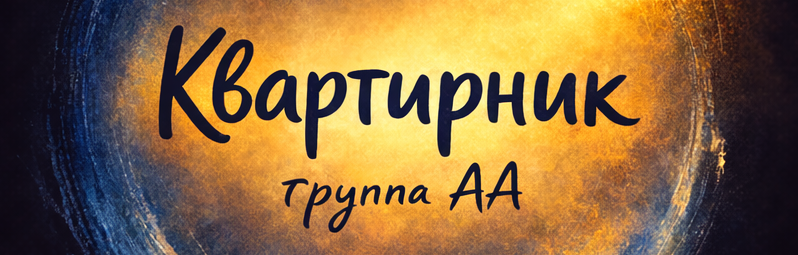

🗳 ИДЕТ ГОЛОСОВАНИЕ
ПРОГОЛОСОВАТЬ
💬
Чат группы
общий чат + текстовое сопровождение собрания
🎧
Подключиться к собранию
собрание проходит в голосовом чате "Яндекс.Телемост"
📣
Объявления
важное и актуальное
🧭
Новичкам
с чего начать + как проходит собрание
👥
Список служащих
контакты + даты ротации + свободные служения
🗳
Голосования
актуальные опросы группы
🗂
Архив
протоколы Рабочих собраний + решения Группы